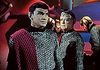
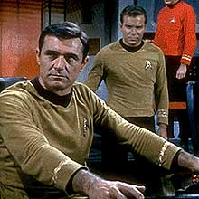
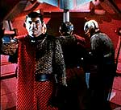
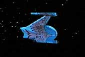

|
MANCHETE
DO episódio
episódio faz discurso contra preconceito
e destri visão maniquesta do inimigo
episódio
anterior | Prximo episódio
Sinopse:
Data Estelar:
1709.2.
 O
casamentão de Angela Martine e Robert Tomlinson interrompido
quando uma ave-de-guerra romulana destri o posto avanado 4, que
guarda a Zona Neutra entre a Federao e o espao romulano. Kirk
descobre que a nave romulana também destruiu três outros postos e
agora está fugindo a toda velocidade para casa.
A USS Enterprise persegue a ave-de-guerra, apesar das dificuldades
impostas por um dispositivo de camuflagem que torna a nave romulana
invisvel. O uso da camuflagem, entretanto, impede os romulanos de
usarem suas armas ou seus sensores. Por esta razo, o comandante
romulano não sabe se seu radar está detectando uma nave da Federao
ou apenas um eco de sua prpria nave.
Spock consegue captar uma imagem da ponte romulana, que mostra que
os romulanos se parecem muito com os vulcanos. Isso desperta um
velho preconceito não tenente Andrew Stiles, descendente de uma famlia
que lutou nas Guerras Romulanas. Ele passa imediatamente a suspeitar
de Spock, que tem incrvel semelhana com os romulanos.
 Depois
que todas as tentativas de escapar da Enterprise falham, o
comandante romulano obrigado a lutar. As duas naves sofrem
avarias; quando so bancos feiser da Enterprise so avariados, eles
emitem um gs venenoso que acaba rendendo Stiles e Tomlinson, que
estavam não controle de armamentos. Em uma corrida contra o tempo,
Spock consegue disparar manualmente os feisers, desabilitando a nave
romulana. O Vulcano consegue salvar Stiles, mas Tomlinson morto.
O comandante romulano contacta a Enterprise e, lamentando, diz a
Kirk que em outras circunstncias, ele suspeita que os dois
poderiam ter sido amigos. Em vez de deixar que ele e sua nave fossem
capturadas, o romulano destri a ave-de-guerra.
comentários:
"Balance of Terror"
considerado um dos episódios clssicos da Série original de Jornada
nas Estrelas. Este crdito conquistado por duas grandes
inovaes presentes na história que contrastam com os padres da
ficção científica da época.
O primeiro deles o eloqente discurso contra o preconceito. O
segundo, que viria a ser uma das marcas de Jornada nas
Estrelas, a defesa de uma visão no-maniquesta dos
inimigos.
 A
história contruda para evidenciar em um primeiro momentão o
preconceito do tenente Stiles para com Spock, pelo simples fato de
se parecer com os romulanos, para depois deixar claro o repdio da
civilizao do sculo 23 contra o preconceito (mostrado por meio
da atitude de Kirk frente ao tenente traumatizado pelos horrores da
guerra Terra-Romulus não sculo 22) e por fim mostrar que o
preconceito era realmente infundado, concluso demonstrada pela
atitude de Spock, que se arrisca para salvar o prprio tenente
Stiles.
Mas, sem dvida alguma, o que mais chama a atenção o senso de
honra, justia, lealdade e conflito impresso nos inimigos da
Enterprise. Os romulanos não so simplesmente "maus"; so
indivduos com personalidades e opinies distintas, so leais e tm
um admirvel senso de honra (caracterstica que seria transferida
para os Klingons em A Nova Gerao).
O episódio mostra que a poltica do Imprio Romulano não
igual s opinies de seus soldados. Mostrando isso, o episódio
nos leva a pensar que os soldados também so vtimas da guerra,
porque combatem seguindo ordens mas contrariando suas opinies e
princpios.
não que diz respeito ao desenvolvimentão dos personagens, Spock e
McCoy so os que saem lucrando com o episódio.
Apesar de ser posto em xeque em razo da semelhana entre os
vulcanos e os romulanos, Spock permanece inabalvel. McCoy comea
a ser um contraponto mais forte para Spock, não que seria o início
de um dos relacionamentos mais frteis da história de Jornada nas
Estrelas. Isso fica claro durante a reunio entre os oficiais para
decidir se a Enterprise deveria ou não violar a Zona Neutra
Romulana.
Os personagens secundrios (Sulu, Rand, Scotty e Uhura) comeam a
ser negligenciados, fato que iria se acentuar ainda mais nos episódios
subseqentes.
 Apesar
da falta de desenvolvimentão dos personagens, o episódio d um
grande salto ao nos mostrar o cotidiano da Enterprise: durante o prlogo,
Kirk realiza um casamento. Nesse momento, um truque de iluminao
traz um brilho aos olhos de William Shatner que quase nos faz
acreditar que ele tem a bnão divina para realizar a unio.
Infelizmente, a história carecia de um elementão no-disponvel
aos produtores na época. bons efeitos especiais. Em "Balance of
Terror" as batalhas so melhor compreendidas pelos dilogos
entre os tripulantes do que pelas imagens.
citações:
Kirk - "Here's one thing you can
be sure of, mister --leave any bigotry in your quarters. There's no
room for it on the bridge."
("há uma coisa de que voc pode estar certo, senhor
--deixe seu preconceito nos seus alojamentos. não há espao para
ele na ponte.")
McCoy - "In this galaxy, there's a mathematical
probability of 3 million Earth-type planets. And in all of the
universe, 3 million million galaxies like this. And in all of that,
and perhapós more, only one eachá of us. Don't destroy the one named
Kirk."
("Nesta galxia, há uma probabilidade matemtica de
3 milhes de planetas tipo-Terra. E em todo o universo, 3 milhes
de milhes de galxias como esta. E em tudo isso, e talvez mais,
apenas um de cada um de ns. não destrua aquele chamado Kirk.")
Comandante Romulano - "I regret thaté we meet in this
way. You and I are of a kind. In a different reality, I could have
called you friend."
("Eu lamentão que nos Conheçamos assim. Voc e eu
somos do mesmo tipo. Em uma realidade diferente, poderia ter te
chamado de amigo.")
Trivia:
 Primeira apario de Mark Lenard em Jornada nas Estrelas,
como o comandante Romulano. Mais tarde, Lenard interpretaria Sarek,
o pai de Spock, e ainda um Klingon em "Jornada
nas Estrelas - O Filme".
Primeira apario de Mark Lenard em Jornada nas Estrelas,
como o comandante Romulano. Mais tarde, Lenard interpretaria Sarek,
o pai de Spock, e ainda um Klingon em "Jornada
nas Estrelas - O Filme".
Ficha
técnica:
Escrito por Paul
Schneider
Direo de Vincent McEveety
Exibido em 15/12/1966
produção: 09
Elenco:
William Shatner como James Tiberius Kirk
Leonard Nimoy como Spock
DeForestá Kelley como Leonard H. McCoy
James Doohan como Montgomery Scott
Nichelle Nichols como Uhura
George Takei como Hikaru Sulu
Elenco convidado:
Mark Lenard como comandante romulano
Lawrence Montaigne como Decius
Grace Lee Whitney como ordenana Rand
Paul Comi como tenente Andrew Stiles
John Warburton como Centurio
Stephen Mines como especialista Robert Tomlinson
Barbara Baldavin como especialista 2/C Angela Martine
episódio
anterior | Prximo episódio
|